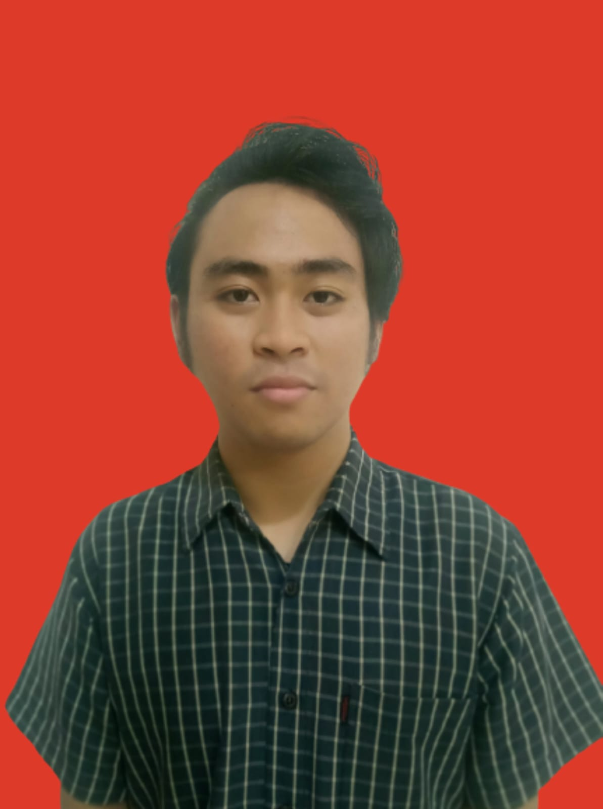

FAUZAN DIMAS ALAMSYAH
Jakarta, Indonesia | My Linkedin | fauzandimasalamsyah12@gmail.com | 085939132144
Experience
PT.811 Indonesia (PAQUES) - Network Engineering Intern
Paques is the leading Data Lake and Analytical solutions in the Indonesian Big Data industry.
- Creating Straight and Crossover cables to connect multiple computers in a company.
- Installing multiple Linux Operation Systems, such as Ubuntu, Debian, and RedHat
- Create an article about what is Big Data and what are the benefits of Big Data in a Company in Indonesia
SIMBIKA TEKNOLOGI SOLUSI - IT Support
Simbika is a modern cooperation shop that can compete with other business entities while adhering firmly to the principles and goals of cooperation shop, which are collective enterprises founded on the principles of kinship.
- Performing regular checks both before and after use on laptops, printers, and computers. Ensuring they function properly and are free from any damage.
- Configuring the Wireless Access Point Ruijie.
- Performing repairs on malfunctioning laptops
- Installing Solid State Drive in 213 laptop units.
- Performing Windows and Office installation on 213 laptop units.
- Performing deep cleaning on laptop hardware components, such as laptop fan cleaning and replacing thermal paste on the processor.
- Performing Windows Server and Linux Installation.
PT.PLN ICON PLUS - Admin Staff
PT Indonesia Comnets Plus, or PLN Icon Plus, is a subsidiary of PLN that operates in the field of information and communication technology. This company focuses on network services, telecommunications services, and content, and supports all technology and information systems of PT PLN and the public.
- Conduct Quality Control and Quality Assurance on internet installation work to ensure whether the installation meets the Standard Operating Procedures (SOP) or not.
Education
Universitas Bina Sarana Informatika - Information Technology
- Successfully achieved a GPA of 3.94 over 6 semesters.
Project
Information Technology Project (UNIVERSITAS BINA SARANA INFORMATIKA) 2022
In this project, students are required to create a software application using Android Studio as a semester-end examination. In this project, I developed a movie synopsis application using Android Studio, using the Kotlin programming language.
Certification
Sertifikat Profisiensi Pengetahuan – IKATAN AHLI INFORMATIK INDONESIA
Network Security Certification – Cisco Networking Academy
NSE 1 Network Security Associate - FORTINET
NSE 2 Network Security Associate - FORTINET
Skills
Languages : Indonesian and English
Technologies : Microsoft Office, JavaScript, HTML, CSS, Node, React, PostgreSQL, Web3, Routing, Switching, Vlan, Fortigate Firewall, Python
Interest : Programming, IT Support and Computer Network.
Others
About Me
My hobbies